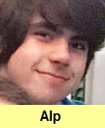
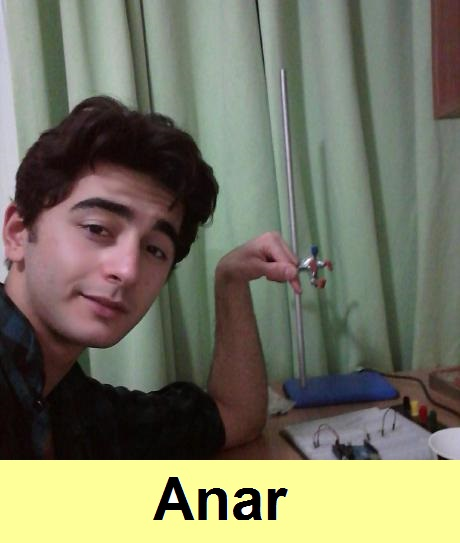
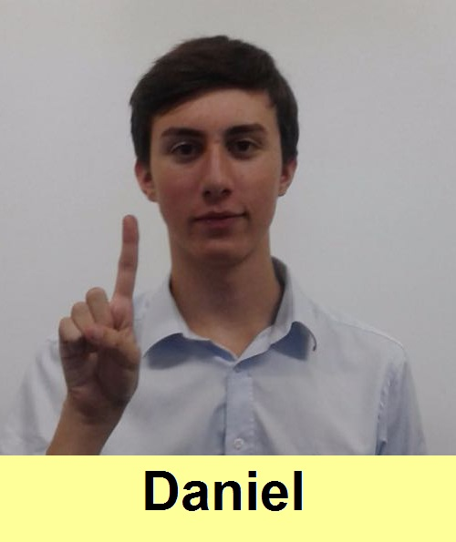
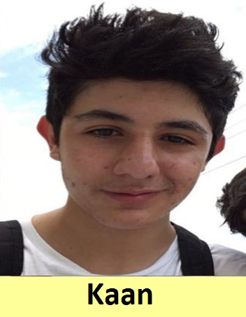

|




This app is created by the ESK students in order to make it easy to learn Turkish Sign Language. The project was leaded by an IB student Anar Kazimov and his team consisting of the following members: Daniel Todd, Alp Orgun, Mohammed Ben Musa, Kiymet Sevket, Berke Özoğul, Kerem Dumanoğlu, Tasmin Angelina Houssein and a Cambridge freshman Kaan Ibrahim. To find out more about our app and us please follow us on Facebook: facebook.com/turkceisaretdili
|